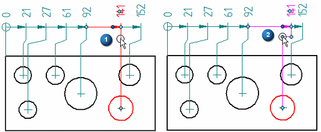
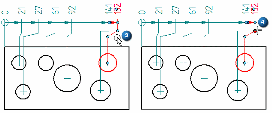
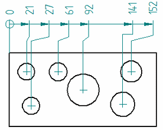

Add and remove jogs on a dimension
You can add and remove jogs on the projection lines of 2D dimensions.
-
Choose the Select command
 .
. -
To insert a jog, do the following:
-
Select an existing dimension (1) to display the dimension edit handles.
-
Position the cursor over the dimension projection line where you want to insert the jog, and Alt+click (2).
A jog segment is inserted.
Example:
-
-
To adjust the position of a jog segment, do the following:
-
Select a dimension with a jog segment (3).
-
Drag the handle to reposition the jog (4).

-
Click in space to update the dimension.

-
-
You can remove a jog by doing this:
-
Select the dimension.
-
Alt+click the dimension jog handle.
-
-
You can add multiple jogs to a dimension projection line.
-
You can remove all of the jogs on an existing dimension using the Jog button on the Dimension command bar.
How do I
Edit a 2D dimension (sketch, profile, draft)Move a dimension
Display a half dimension
Set terminator size and shape
Change dimension behavior
Change the orientation of a dimension
Break a dimension projection line
Remove breaks from a dimension projection line
Change the parent of a dimension by dragging it
Reattach a dimension or annotation using the Attach Dimension command
Activate a part for dimensioning in a draft quality view
Learn more
Dimension edit handlesSnap indicators for dimensions
Look up more details
Attach Dimension commandAdd Projection Line Break command
Remove Projection Line Break command
Activate Part command